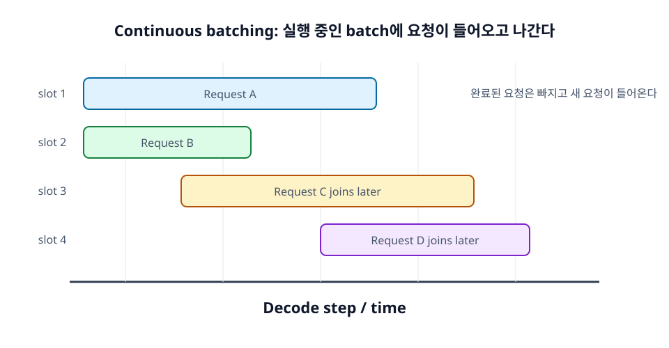

17장. Batching과 Scheduling¶
LLM serving에서 GPU를 효율적으로 쓰려면 여러 요청을 묶어 처리해야 한다. 하지만 일반적인 batch 처리와 달리 LLM 요청은 입력 길이와 출력 길이가 제각각이다. 어떤 요청은 10 token만 출력하고, 어떤 요청은 1,000 token을 출력한다.
Continuous batching은 이런 동적인 요청들을 실행 중인 batch에 넣고 빼면서 GPU를 계속 바쁘게 만드는 기법이다.

학습 목표¶
- Batching이 GPU 활용률을 높이는 이유를 이해한다.
- Continuous batching의 필요성을 설명한다.
- Chunked prefill이 TTFT와 TPOT 균형에 미치는 영향을 이해한다.
17.1 Batching의 필요성¶
GPU는 작은 작업 하나만 던져 주면 충분히 바쁘지 않을 수 있다. 여러 요청을 batch로 묶으면 행렬 연산을 더 크게 만들고 GPU 활용률을 높일 수 있다. 하지만 batch가 커질수록 latency와 memory pressure도 증가할 수 있다.
17.1.1 GPU를 놀리지 않기 위해 batch를 만든다¶
Decode step 하나는 새 token 하나를 생성하는 작업이다. 단일 요청만 decode하면 GPU의 연산 자원을 충분히 활용하지 못할 수 있다. 여러 요청의 decode step을 묶으면 GPU가 더 큰 batch를 처리하게 되어 throughput이 좋아질 수 있다.
17.1.2 Batch가 크면 throughput이 좋아질 수 있다¶
Batch가 커지면 한 번의 GPU 실행으로 더 많은 token을 처리할 수 있다. 그래서 tokens per second는 증가할 수 있다. 특히 짧은 요청이 많을 때 batching은 큰 효과를 낸다.
다만 throughput이 좋아져도 개별 요청 latency가 항상 좋아지는 것은 아니다. Queue에서 기다리는 시간이 늘거나, batch 안의 긴 요청 때문에 scheduling이 복잡해질 수 있다.
17.1.3 Batch가 너무 크면 latency가 나빠질 수 있다¶
Batch가 너무 크면 GPU memory 사용량이 늘고, 각 요청이 자신의 decode turn을 기다리는 시간이 증가할 수 있다. 특히 latency SLO가 중요한 서비스에서는 무작정 batch를 키우는 것이 위험하다.
운영에서는 throughput과 latency 사이의 균형을 잡아야 한다. Goodput은 SLO를 만족한 처리량을 보는 데 도움이 된다.
17.2 Continuous batching¶
전통적인 fixed batching은 일정 시간 요청을 모은 뒤 batch를 실행하고, batch 전체가 끝날 때까지 기다린다. LLM에서는 요청마다 output 길이가 다르기 때문에 이런 방식이 비효율적이다.
17.2.1 실행 중인 batch에 새 요청을 넣는다¶
Continuous batching은 실행 중인 batch에서 완료된 요청을 제거하고, 새 요청을 추가한다. 따라서 batch가 고정된 요청 집합이 아니라 시간에 따라 변한다.
이 방식은 decode loop에서 특히 중요하다. 어떤 요청이 stop token을 만나 끝나면 그 slot을 비워 두지 않고 새 요청을 넣을 수 있다.
17.2.2 요청마다 출력 길이가 달라도 효율을 유지한다¶
LLM 요청은 출력 길이가 예측하기 어렵다. Fixed batch에서는 짧은 요청이 끝나도 긴 요청이 끝날 때까지 resource가 비효율적으로 남을 수 있다. Continuous batching은 완료된 요청을 바로 교체해 GPU utilization을 유지한다.
이 구조 덕분에 modern LLM serving 엔진은 다양한 길이의 요청을 더 효율적으로 처리할 수 있다.
17.2.3 현대 LLM serving의 핵심 기법이다¶
vLLM, SGLang, TensorRT-LLM 같은 엔진은 모두 batching과 scheduling을 핵심 기능으로 다룬다. 모델을 빠르게 실행하는 kernel도 중요하지만, 어떤 요청을 언제 실행할지 결정하는 scheduler가 전체 성능을 크게 좌우한다.
개발자가 직접 엔진을 만들지 않더라도, serving 로그에서 running requests, waiting requests, scheduled tokens 같은 지표를 이해하면 성능 문제를 더 잘 분석할 수 있다.
17.3 Chunked prefill¶
Chunked prefill은 긴 prompt의 prefill을 한 번에 처리하지 않고 여러 chunk로 나누어 scheduling하는 방식이다. 긴 prefill이 decode 요청을 오래 막는 문제를 완화하는 데 사용된다.
17.3.1 긴 prefill을 한 번에 처리하지 않는다¶
긴 prompt 하나를 한 번에 prefill하면 GPU를 오래 점유할 수 있다. 그동안 이미 decode 중인 요청들의 token 생성이 지연될 수 있다. Chunked prefill은 긴 prompt를 여러 조각으로 나누어 다른 decode 작업과 섞어 실행할 수 있게 한다.
17.3.2 Decode 요청과 prefill 요청의 간섭을 줄인다¶
Prefill은 compute-heavy하고 decode는 memory-bandwidth-heavy한 성격이 있다. 긴 prefill이 들어오면 decode TPOT가 나빠질 수 있다. Chunked prefill은 prefill 작업을 쪼개 scheduler가 decode와 균형을 맞추게 한다.
17.3.3 TTFT와 TPOT의 균형을 맞춘다¶
Chunked prefill은 TTFT와 TPOT 사이의 trade-off를 조정한다. Prefill을 너무 잘게 쪼개면 첫 token까지 시간이 늘 수 있지만, decode 중인 요청의 inter-token latency를 보호할 수 있다. 반대로 prefill을 크게 처리하면 새 요청의 TTFT는 줄 수 있지만 기존 stream이 끊길 수 있다.
서비스 특성에 따라 어떤 지표를 더 우선할지 정해야 한다.
정리¶
Batching은 GPU 활용률과 throughput을 높이는 핵심 기법이다. LLM serving에서는 요청 길이가 동적이므로 continuous batching이 중요하다. Chunked prefill은 긴 prompt가 decode 요청을 방해하지 않도록 prefill 작업을 나누어 scheduling하는 방법이다.
점검 질문¶
- Batch가 커지면 throughput과 latency는 각각 어떻게 달라질 수 있는가?
- Continuous batching은 일반적인 fixed batching과 무엇이 다른가?
다음 장으로¶
다음 장에서는 반복되는 prompt prefix를 재사용해 prefill 비용을 줄이는 Prefix Caching을 다룬다.